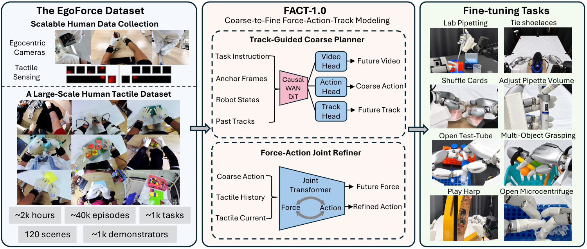
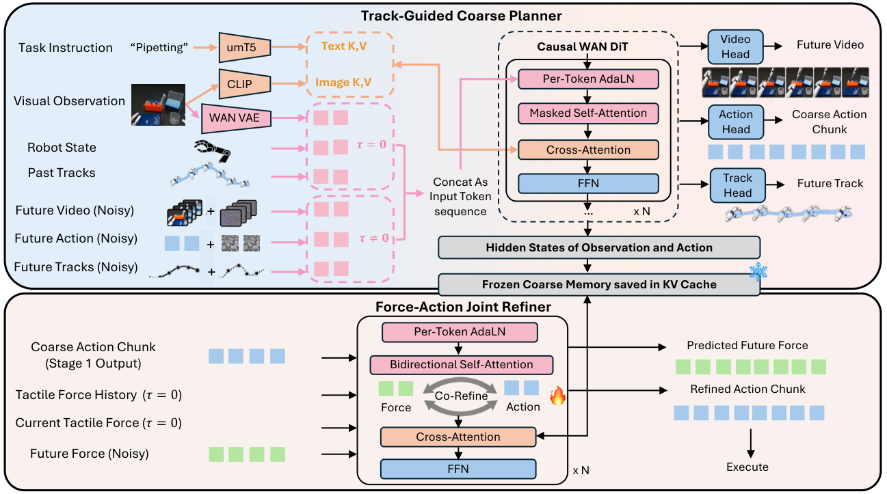

Embodied intelligence · Dexterous robotics
FACT–1.0
A Multimodal Force–Action–Track Foundation Model for Human-to-Robot Dexterity
University of Michigan · Stanford University · Microsoft Research
* Equal contribution † Equal advising
* Equal contribution † Equal advising
Real-world task demonstrations
Nine task-demonstration videos are included locally. Videos autoplay muted and loop; expand for a larger view.
Abstract
Dexterous manipulation requires anticipating motion while responding precisely to physical contact. FACT-1.0 is a multimodal force–action–track foundation model for human-to-robot dexterity. It leverages EgoForce, a large-scale dataset of human demonstrations with synchronized egocentric vision and bimanual tactile sensing, to learn transferable manipulation representations. A two-stage architecture first predicts future visual tracks, video, and coarse actions, then jointly refines robot actions and predicts fingertip forces. Experiments evaluate the approach on diverse real-world dexterous tasks, including precision laboratory procedures, tool use, and multi-finger coordination.

Dataset: EgoForce
Human Demonstrations & Tactile Sensing
Original dataset-related clips embedded in the FACT-1.0 presentation (slides 7–8).
A large-scale human tactile dataset with three egocentric RGB views and bimanual tactile gloves, spanning diverse tasks and interaction types.
2,000Hours of demonstrations
~40kEpisodes
~1,000Tasks
~120Scenes
~1,000Demonstrators
Method
Stage I · Track-Guided Coarse Planner
Joint future-video, track and action prediction builds a motion-aware coarse plan.
Stage II · Force–Action Joint Refiner
Cached coarse memory conditions joint future-force prediction and fine action refinement.

Observe → Plan → Cache → Refine → Execute.
Experiments
FACT is evaluated on ten tasks involving tool use, musical instruments, precision laboratory procedures, and multi-finger coordination. The paper reports gains of up to 60 percentage points over T-Rex in the studied fine-tuning settings.
Pretraining recipe ablation
All ten tasks, as reported in the manuscript.
| Task | Human + force + robot (full) | Human without force + robot | Robot only |
|---|---|---|---|
| Binary tasks · success rate (%) | |||
| Lab pipetting | 40 | 20 | 0 |
| Open test-tube cap | 80 | 0 | 20 |
| Open microcentrifuge flip cap | 50 | 10 | 0 |
| Tie shoelaces | 20 | 0 | 0 |
| Shuffle cards | 30 | 10 | 0 |
| Multi-object grasp | 40 | 40 | 30 |
| Use screwdriver | 30 | 10 | 0 |
| Continuous · correct notes of 10 | |||
| Play harp | 6.7 | 2.0 | 1.2 |
| Play xylophone | 5.4 | 2.2 | 1.0 |
| Volume adjustment · engaged trials of 10 | |||
| Pipette volume | 5 | 2 | 0 |
| Mean absolute error (µL) ↓ | 6.4 | 20.5 | N/A |
Contribution of human fine-tuning data
| Task | Robot : human = 10 : 0 | Robot : human = 10 : 90 |
|---|---|---|
| Binary tasks · success rate (%) | ||
| Tie shoelaces | 10 | 20 |
| Shuffle cards | 10 | 30 |
| Volume adjustment · engaged trials of 10 | ||
| Pipette volume | 4 | 5 |
| Mean absolute error (µL) ↓ | 11.2 | 6.4 |
BibTeX
Copy the BibTeX entry below.
FACT–1.0 · Force · Action · Track · Built from the supplied paper and presentation assets.